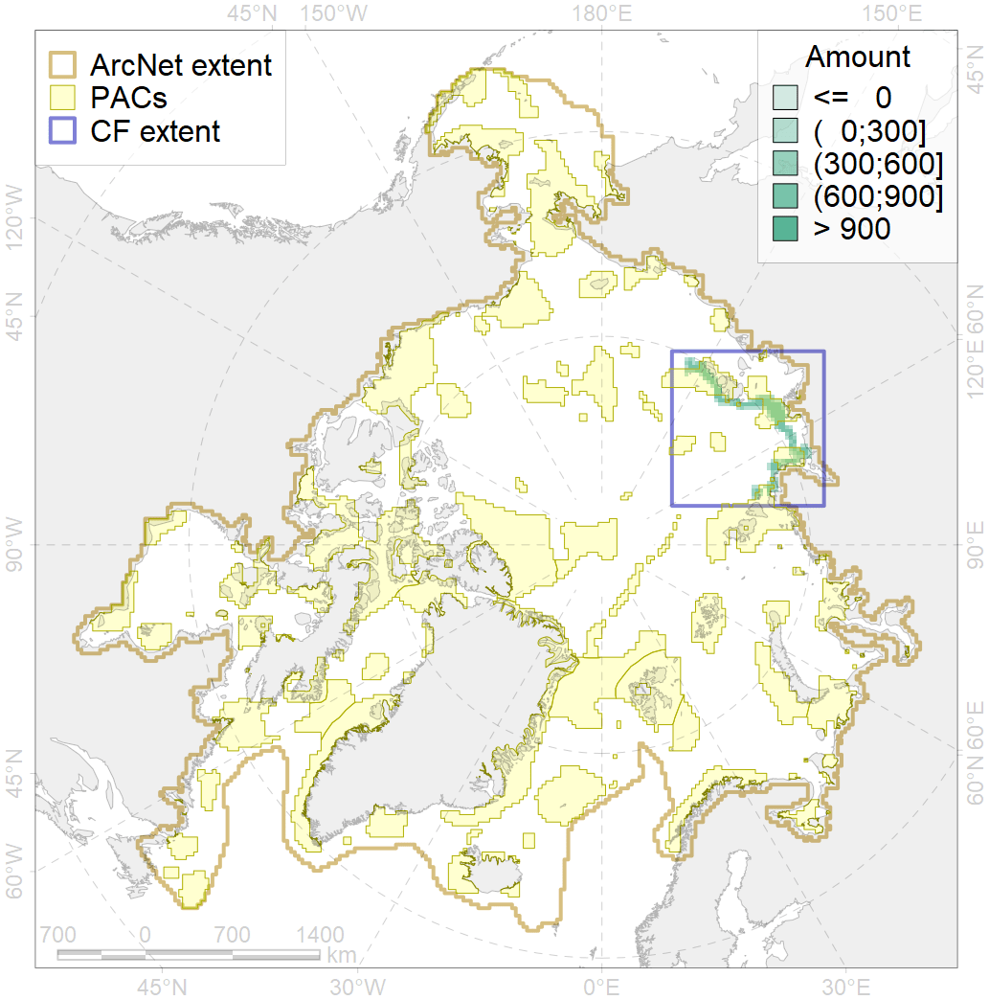
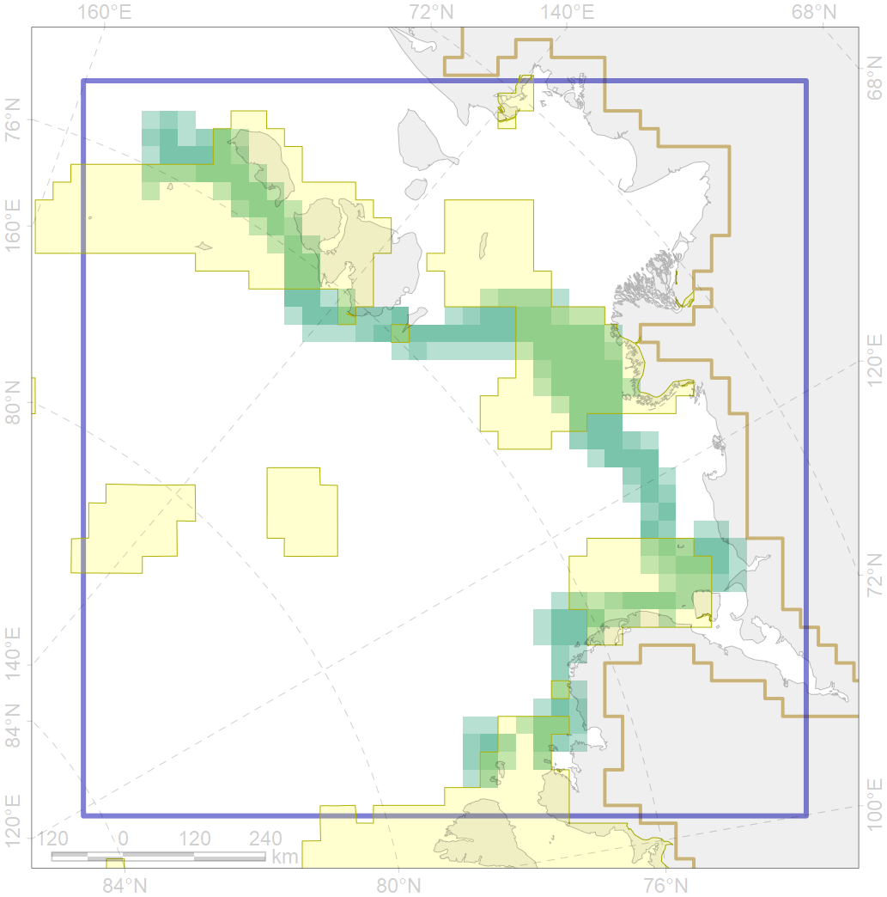

1014

| CF ID | 1014 |
| CF Name | Laptev Walrus Whelping patches |
| Time Period | 1940s-2013 |
| Source(s) | Surrogate data; polynyas were taken from Russian Arctic Project, non-published data |
| Seasonality | December-May |
| Depth Horizon | < 50m |
| Methodology | Modelling. Data based on distribution of polynyas |
| Author Name | Maria Solovyeva |
| Notes | |
| Conservation Target Set in the Scenario | 0.24 |
| Conservation Target Achieved in the Scenario | 0.563 (Scenario: 234.4%) |
| PAC ID | Proportion in the PAC | Contribution to ArcNet Target Achievement | PAC’s Contribution to the Achieved Target |
|---|---|---|---|
| 11 | 17.6% | 71.5% | 30.5% |
| 12 | 22.5% | 88.5% | 37.8% |
| 13 | 9.5% | 37.0% | 15.8% |
| 14 | 4.9% | 15.5% | 6.6% |
| inner | 54.5% | 212.5% | 90.7% |
| outer | 45.5% | 21.9% | 9.3% |